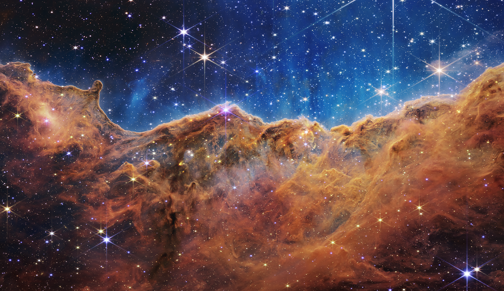
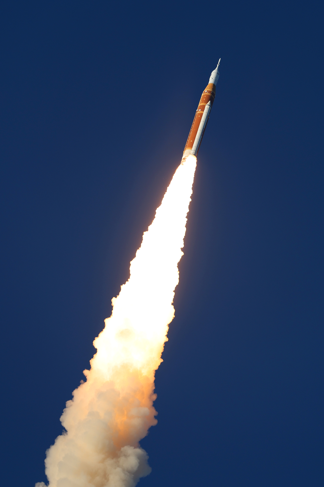
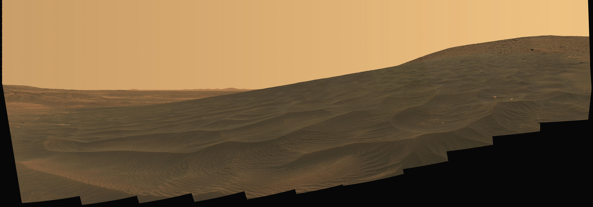

A Thousand Worlds

Picture this. Not just Earth, and not just Mars. Picture hundreds of worlds, some barely developed, some so far ahead of us we wouldn't even understand their technology. Picture humans living alongside species we can't picture yet, the way the galaxy in Guardians of the Galaxy feels less like science fiction and more like a rough sketch of something that could actually happen. That's the future this page is asking you to imagine.
IT'S ALREADY STARTING, JUST SLOWER THAN THE MOVIES
Real plans for living on other worlds are already in motion, even if they move slower than any sci-fi timeline. SpaceX has been targeting the mid-2030s for the first humans on Mars, and NASA has its own crewed Mars goals for the 2030s as well (Tech Times). Elon Musk himself recently said humans could set foot on Mars in roughly five to seven years, putting the timeline around 2031 to 2033 (Basenor).

That's still just one planet, in one solar system, and it's already this hard. So stretch that out. If setting foot on Mars takes decades of work, what does it take to reach a planet orbiting a completely different star? What does it take to build a life on a world that isn't underdeveloped like early Mars, but more advanced than anything we've built on Earth?

A GALAXY OF NEIGHBORS, NOT JUST NEW LAND
Here's where it gets bigger than just moving somewhere new. Astronomers have already confirmed more than six thousand planets outside our solar system, and roughly one in four stars has a planet about Earth's size sitting in a zone where life could exist (Phys.org). That's not one new home. That's an entire neighborhood of possible homes, each one a mystery until someone actually gets there.
Now think about what that neighborhood might already look like. What if some of those planets already have life on them, at every possible stage? Some barely past their own stone age. Others centuries or millennia beyond where humans are right now. If we ever reach that point, humanity wouldn't just be colonizing empty land. We'd be walking into a galaxy that's already full, with cultures, technologies, and ways of thinking we've never had to consider before.
HOW DOES THAT MAKE YOU FEEL?
Some people find that thrilling. A universe with room to grow, other minds to learn from, an entire galaxy of potential. Other people find it terrifying. What happens if we're not the most advanced ones in the room? What happens if we are, and the choices we make with that power aren't good ones?
There's no single right way to feel about this. Maybe it's both excitement and unease at the same time, and maybe that's exactly the right reaction. This isn't really about Mars, or 2030, or any one date on a calendar. It's about the fact that humanity might not stay a one-planet story forever, and what that means is still ours to imagine.